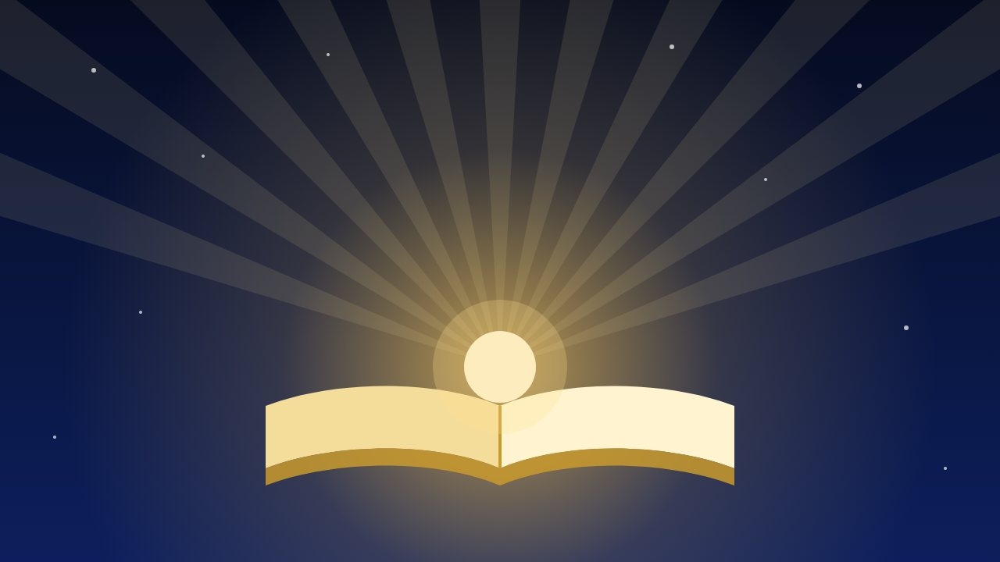

The Holy Quran: Light Over Darkness
In an age flooded with information, many people feel more lost than ever. For me, the Quran is the light that shows the way.

Imagine walking through a long road at night with no light. The road is there, the way home is there, but you cannot see them. You trip, you hesitate, you turn the wrong way. Then someone hands you a torch. The road did not change. The light simply showed what was already true.
That is how I understand the Holy Quran. I write this as a Muslim, in the first person, as a statement of faith and not as an argument against anyone.
What the Quran says about itself
The Quran repeatedly describes itself as light and as guidance. The verses below are given in paraphrase. Please read them in a trusted translation for the exact wording.
- Surah An-Nisa (4:174): a clear proof has come from your Lord, and a clear light has been sent down.
- Surah Al-Ma’idah (5:15-16): a light and a clear Book have come, through which Allah guides those who seek His pleasure to the ways of peace and brings them out of darkness into light.
- Surah Ibrahim (14:1): a Book revealed so that people may be brought out of darkness into light, by their Lord’s permission.
A Book sent down to bring people out of darkness into light.
The darkness we face
Darkness is not only the dark of night. Many of us know these kinds:
- Ignorance and doubt. Not knowing what is true, or being unable to tell truth from noise.
- Confusion about purpose. Asking why we are here, and answering only with work, money and status.
- Injustice and ego. The darkness we create when we put ourselves above others.
- Misinformation. Fake videos and rumours that spread faster than the truth. I wrote about the Quranic teaching to verify before believing in a Bangla article, যাচাই না করে বিশ্বাস নয় (“Do not believe without verifying”).
- Despair. The feeling that the burden will never lift.
For the last one, the Quran offers a gentle promise: with hardship comes ease (94:5-6). And elsewhere it says that in the remembrance of Allah hearts find rest (13:28).
A light has to be read
A lamp kept in a drawer lights no room. The Quran asks us to think about it, not just to own it. It asks, “Do they not reflect upon the Quran, or are there locks upon their hearts?” (47:24, paraphrased). Here is a simple way to begin:
- Read a little every day. Even a few verses, at a fixed time.
- Read with a translation you understand. Understanding is what turns reading into guidance.
- Reflect. Ask what the verse says to your life today.
- Act on one thing. One small change is worth more than many good intentions.
- Learn from qualified teachers. Ask questions and avoid making rulings on your own.
The prayer taught in the Quran fits this journey well: “My Lord, increase me in knowledge” (20:114).
Light in the age of technology
I work with technology, and I love what it can do. Search engines and AI can give answers in a second. But information is not wisdom. An algorithm can tell you what is popular, not what is right. It cannot give you purpose, conscience or a reason to be kind when no one is watching.
The values the Quran teaches, such as truth, justice, trust and mercy, are the values I try to bring into the systems I build. If AI is a powerful tool, then the guidance behind the hand that holds it matters even more.
Why I say it is the light
Many things give people comfort and direction: family, honest teachers, good books, kindness. I respect all of that. But I believe the Quran is the final, preserved guidance from the Creator, complete in what a person needs to find the way. For that reason, for me it is the light over every darkness, and I do not know of any other book that I could put in its place.
If you are not a Muslim, I invite you to read a translation with an open heart and judge it for yourself. If you are a Muslim who has drifted away from reading it, today is a good day to open it again.
A small invitation
Start with Surah Al-Fatihah and its meaning. Then read a few verses each day with a translation. Keep a small notebook for what stays with you. Do not rush, and do not be discouraged by slow progress. A little, done every day, is how light fills a room.
Final thoughts
May Allah guide all of us out of every darkness and into the light. If this article helped you, share it with someone who may need it. You can read more in my other articles.
Comments